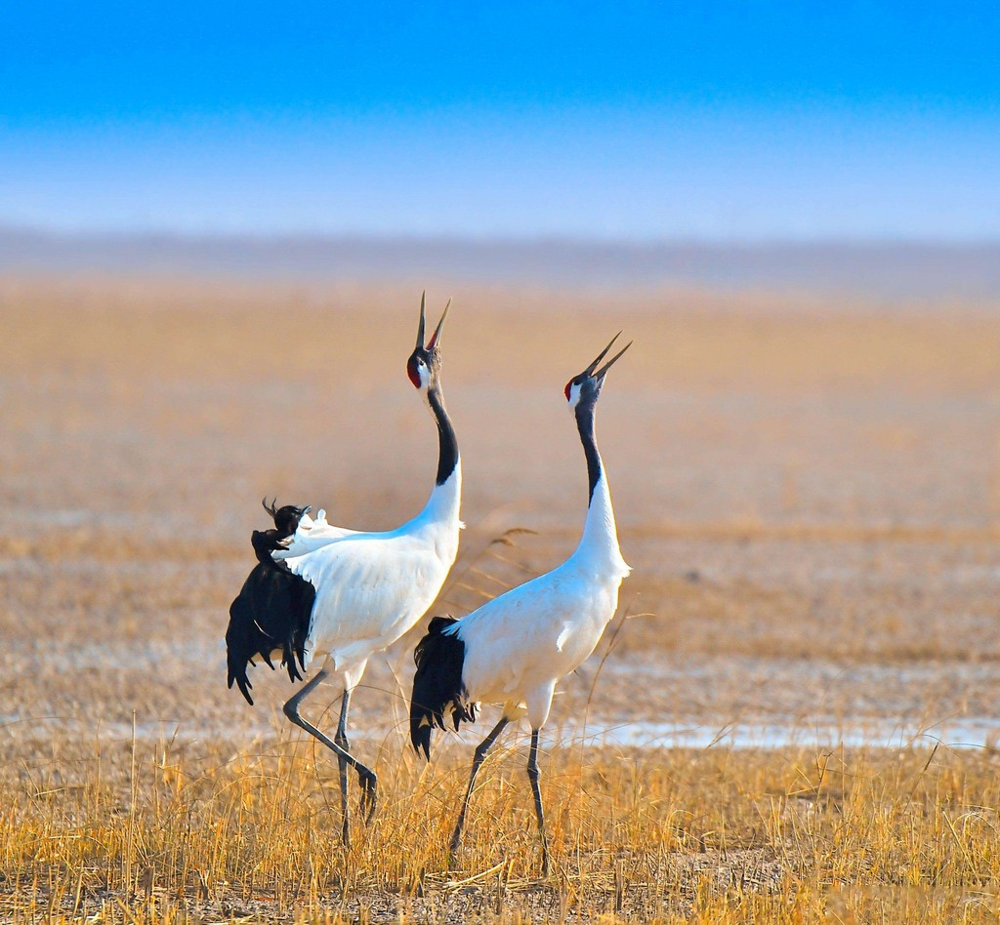
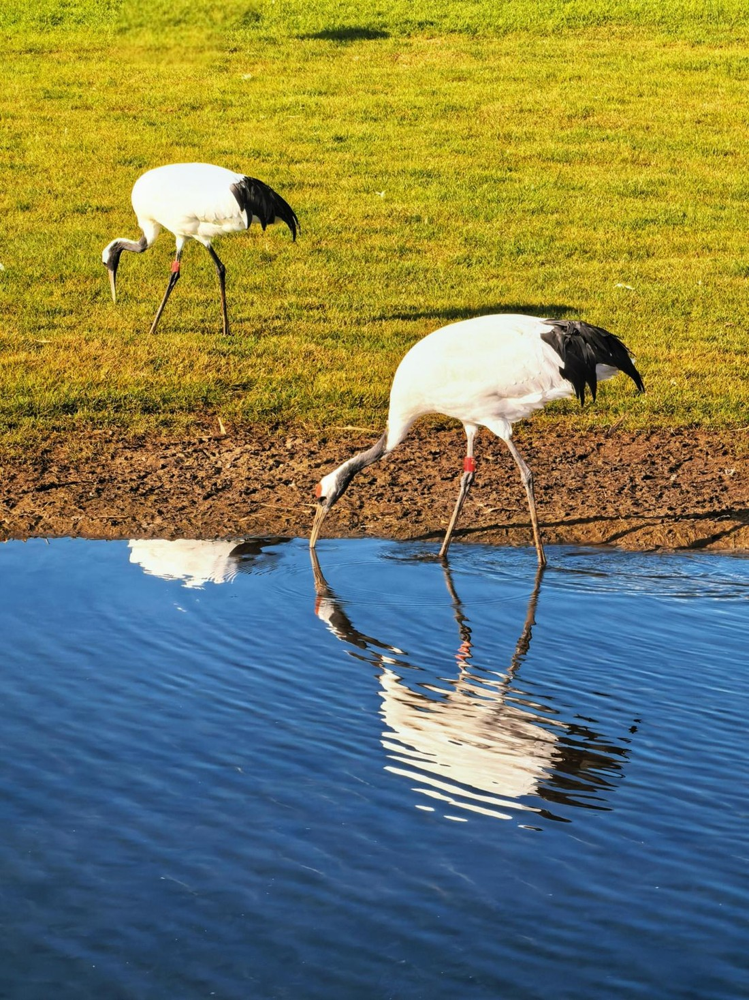
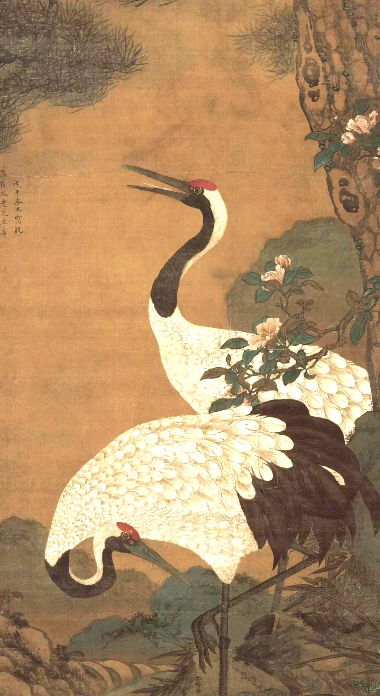
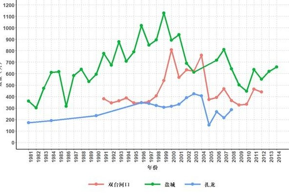
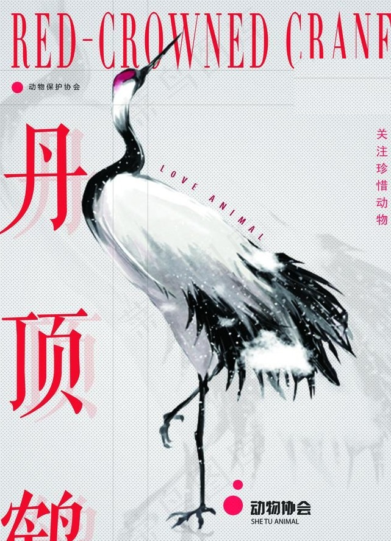

It is the largest crane in the world, and one of the rarest: a bird that stands as tall as a ten-year-old child and carries its name on the top of its head.

The red-crowned crane breeds in the wetlands of the Russian Far East and northeast China. When winter comes, most of the population flies south to the coastal mudflats around Yancheng, in Jiangsu Province, and to the Korean Peninsula.
One group breaks the pattern. The cranes of Hokkaido, in Japan, do not migrate at all: artificial feeding and habitat protection have let them stay through the year.
The species wants shallow marsh with standing dead vegetation and water deep enough to matter. Its long legs and long beak let it forage further out than other cranes, and the reeds offer both food and cover. Nests are built on wet ground or in shallow water — safe from land predators, and still easy to reach.

Xu Xiujuan loved red-crowned cranes. She grew up on the wetland, and it was her father who taught her how to care for them.
Later she went to Yancheng to protect a wild population. She hatched chicks and stayed with them every day.
One evening two cranes did not come back. She went into the marsh to find them. The mud was soft and the water was cold, and she kept going. She sank into the deep marsh and did not come out.
She was twenty-three.
People there still remember the girl, her cranes, and the story the three of them share.
In Chinese tradition the red-crowned crane is more than a bird. It has long stood for longevity, loyalty and good fortune.
Because cranes were believed to live for many years, they appear beside pine trees in the popular motif of “pine and crane” — a blessing for a long and healthy life. The bird is tied to Taoist ideas of immortality, and is sometimes called the immortal crane. In painting, poetry, stamps and wedding designs, its white body, black neck and red crown make an elegant image of grace and purity. Officials of the Ming and Qing dynasties wore crane badges to mark high rank.
It turns up on porcelain and on court robes, in temple wall paintings and in the oldest poetry. Few birds carry so much meaning.
Pairs stay together for years, and a crane that loses its mate may not breed again — which is why the bird also stands for loyalty. In Chinese it is often shortened to xianhe, the crane of the immortals, and it turns up on everything from temple walls to wedding invitations.
Today it remains a beloved symbol of harmony between people and nature.

The species is listed as Vulnerable on the IUCN Red List, with a wild population of only about 3,000 individuals remaining.
Wetland reclamation and degradation keep shrinking the habitat it depends on. Water pollution and human disturbance lower breeding success, while poaching and power-line collisions take a further toll. The trend across the range is still downward, and no single reserve can hold a secure population on its own.
Urgent measures are needed to protect what is left of the wetlands and to hold a declining population steady.

Small choices can keep wetlands alive. Saving the red-crowned crane starts with water.
You do not have to live near a marsh to help. Protect wetlands; never drain a pond or a reed bed. When you watch birds, keep your distance, stay on the path, and never chase or feed a crane. Cut back on plastic and pesticide. And speak up: tell a friend, share a photo, join a clean-up day.
Only about 3,000 red-crowned cranes remain in the wild, and each one of them needs a healthy wetland.
The work is slow, but so is a crane’s dance — and both are worth waiting for.
